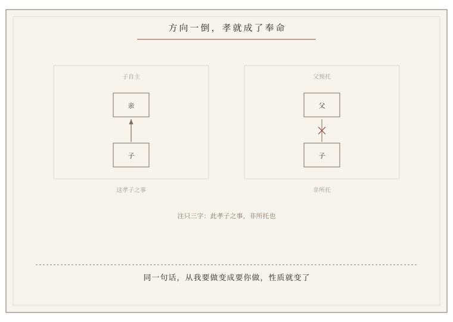

檀弓上 · 三·八十一 · 第 284 课
後木曰：「喪，吾聞諸縣子曰：『夫喪，不可不深長思也。買棺外內易。』我死則亦然。」
说什么事：后木说：关于丧事，我从县子那里听过一句话：「办丧事不可不深长思虑。买棺的时候，要让内外都斫削得平滑。」他又添一句：我死了也这样办。
落在哪一层：礼意。论「孝子之事，非所托」——孝不能由父母预先索取。
为何编在此位：上节论殷周不降，收服制之辨；此节转论丧事之嘱托，开「礼不可预索」一义。自此以下十节，皆论礼之公与私。
【经】後木曰：「喪，吾聞諸縣子曰：『夫喪，不可不深長思也。買棺外內易。』我死則亦然。」
【注】後木，魯孝公子惠伯鞏之後。此孝子之事，非所託。
【疏】此一节论属子以死事非礼之事。后木云：孝子居丧之礼，吾闻之于县子云「夫居丧不可不深思长虑也；孝子既深思长虑，故买棺之时当令精好，斫削外内，使之平易」。后木既述县子之言以语其子，又云「在后我身若死，则亦当然」——「然」犹如是，我死亦当如是县子之言，买棺外内易也。案《世本》「孝公生惠伯革，其后为厚氏」，《世本》云「革」此云「巩」，《世本》云「厚」此云「后」，其字异耳；则惠伯之子孙无名木者，故郑直云其后。言买棺外内滑易者，此是孝子所为之事，非是父母豫所属托，讥后木也。
后木 鲁孝公之子惠伯巩的后人。注「鲁孝公子惠伯巩之后」。
深长思 往深处、往长远想。即想得远：想到自己死后。
外内易 棺木的内外都斫削得平滑。易，平易、滑易。
我死则亦然 我死了也照这样办。「然」犹如是。
非所托 不是可以嘱托的事。注三字是此节的断语。
后木说：「关于丧事，我从县子那里听过：『办丧事不可不深长思虑。买棺时要把内外都斫削平滑。』我死了也这样办。」
此节只有两句引文加一句自道，而注用三个字就把它推倒了：「非所托。」
后木的错不在内容。买棺内外平滑，确是孝子该做的事，县子的话也不差。错在他把这句话变成了对儿子的嘱托：「我死则亦然。」
疏把这一层说得极清楚：买棺滑易「此是孝子所为之事，非是父母豫所属托」——这是儿子该主动做的，不是父亲可以预先要求的。
一句话，从「我要这样做」变成「你要这样对我做」，性质就变了。前一句是孝，后一句是把孝变成了奉命。
第一层 「深长思」被读歪了 县子原话是「丧，不可不深长思也」，意思是办丧事要想到长远，别只顾眼前。后木把它解成「想到自己死后」，于是深长思变成预办后事。这是一次典型的义转：话没变，指向变了。
第二层 为什么「托」不成立 孝是子对亲的情，方向是从下往上。父亲若预先嘱托「你该如何葬我」，就把这个方向倒过来了——变成上对下的索取。礼可以规定丧葬之节，但不能由被葬者本人来要求自己的葬礼规格。一旦要求，厚葬就成了交易。
第三层 「非所托」三字的分量 注没有说后木贪厚葬，也没有说他违礼，只说「非所托」。这是最轻的判语，也是最重的：不判其行，判其位置。有些事做错了可以改，位置错了整件事就不成立。
第四层 与 291 合看（伏笔） 后数节子游问丧具，夫子答以「称家之有亡」「有，毋过礼」。厚葬之禁，正面在那里。此节从反面立：厚葬之念，最好连嘱托的念头都不起。
与今日何干 今人早立遗嘱、预购墓穴、预办寿宴，已成常事。此节不是反对安排后事，是针对那一句「我死则亦然」——把自己的葬礼规格当成对子女的要求提出来。安排可以，索取不可。这一线极细，此节划得极清。
| 左 | 右 |
|---|---|
| 丧不可不深长思 | 县子之言 |
| 买棺外内易 | 孝子所为 |
| 我死则亦然 | 后木之托 |
| 此孝子之事 | 主动在子 |
| 非所托 | 被动在父 |
| 深长思 | 原指虑远，非指预办 |
| 托则厚葬成交易 | 位置一错，事不成立 |
画一间木作，视点平。案上横放一具刚斫好的棺木（内外已刨平，木纹平滑，未上漆），棺旁一柄刨子与一小堆木屑。棺前立着一位老者（深衣、正面、手指向棺、另一手作交代状）；棺的另一侧站着一位后辈（深衣、低首、双手垂立）。两人之间地上放着一卷未展开的素帛。不写文字、不画人面细节。赭色只用在棺木内壁刨光的一道亮痕，与地上那卷素帛的卷端。
